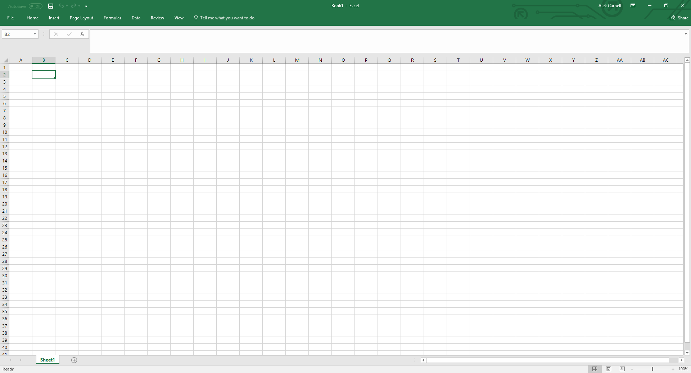
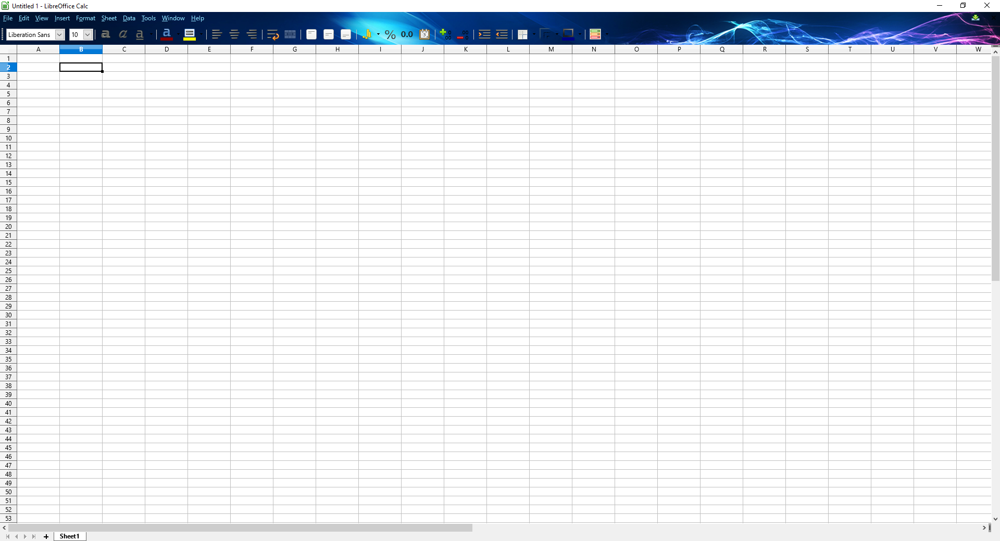
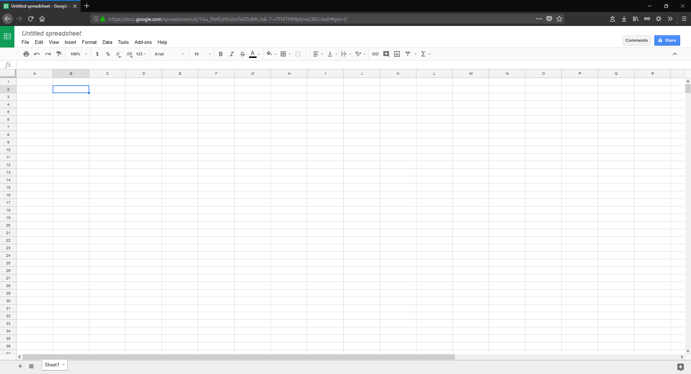
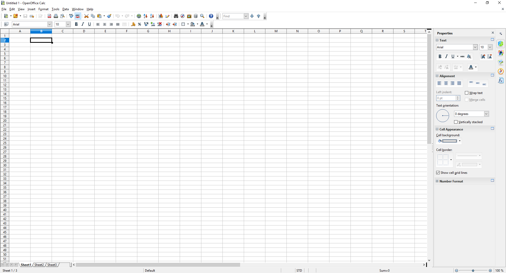

Spreadsheet Software
Spreadhseet software is a wonderful tool that I am very excited to talk about. Some of you
will need to be familiar with it for a job or perhaps school work. I personally love it for everyday
use though. I manage a lot of personal things using spreadsheets like catelogging my collectibles,
finances, and making calculators for video games, to name a few. I encourage anyone who
has a computer of any sort to explore ways to make use of this software as I stongly believe
it is under appreciated by average users.
There are a few different spreadsheet applications you can choose from and depending
on what you are looking for and your budget, one might be a better fit than the other.
However for the purpose of tutorials going forward I will be using Microsoft Excel. The good
news is that most if not all of the information going forward will work for any spreadsheet
software. So let's see what we have to work with here.
Microsoft Excel
|

|
Excel is my preferred spreadsheet software. This will be the only software
I will list that will actually cost you money. Though I would argue that the value is there
with Excel. The value for me comes from
software updates, clean interface, supported features by other software, and
being an 'industry standard' application that may be attractive to potential employers
for being familiar with. However everything that it has to offer is more or less offered
in similar spreadsheet software. I will say that Excel handles the largest data sets with
the most ease out of the ones I've tested which is especially important to me but may
not be to others. For 6.99 a month or a 79.99 yearly liscence, you are getting the entire suite which
is where the value for me really lies because their other applications like Access and Powerpoint
are objectively better than any other I have used. Word also has the easiest compatibility
with websites that allow you to upload documents which was important to me for resumes.
If you only plan on using spreadsheets and don't want to spend money, you may be
better off with one of the alternatives.
|
Libre Office Calc
|

|
This is an okay office suite through and through considering it is absolutely free to use. It comes with all
of the tools that Microsoft Office comes with and it works very well with Linux systems. Their
spreadsheet software does work a little differently though. A few of the default settings for punching
in formulas are different, though changable. It has nice features for customizing the software (like the
theme in the screeenshot) but it's power
features, like grabbing data from the internet, are a nusance to get working. It's very smooth with
standard data sets but lags out terribly with large sets. It's not a bad option and probably one of
the best if you're on linux and don't plan on data mining.
|
Google Sheets
|

|
It should come as no surprise that the ever ambitious and expanding enterprise, Google, has made
their version of just about every popular application out there, including spreadsheets.
Their approach is pretty unique as it can be used in your browser instead of having
to download the suite and run it locally on your machine. While that means there is a lack of features
and usability, this is a huge advantage for portable computers like netbooks or tablets that want to
make use of spreadsheets but lack expendable storage options. Google not only runs their software
through your browser but storage on Google Drive for all of your workbooks and documents, again,
making it extremely lightweight and perfect for use on portable devices. This is the opposite of Microsofts
portable solutions which I find unusable in pretty much every way. Google Sheets as well
as their other office tools are completely free to use including the provided storage.
The drawbacks of this portability is of course the lack of handling for large data sets and some power
features. A great application but not for everyone.
|
Open Office Calc
|

|
|
If you had asked me about Open Office a couple of years ago I would have told you it was a virus
and to avoid it like the plague. However I recently re-downloaded their suite, mostly for the purpose
of making this list, and was impressed with how much better it has become. I can't speak for all
of their office tools but I liked their spreadsheet software. It had all of the features an average user
would want and it actually handled large, formula rich workbooks rather well. It had okay if not lack-luster
customization options for the aesthetically motivated user. But packed a lot of options to change key commands
and keyboard layouts which was it's redeeming quality because a lot of the advanced shortcuts used in
Excel are completely different in Open Office. It's bothersome but it can be changed to function differently
should you not want to relearn those shortcuts using their defaults. It is free to use and has some quirky
features to make it stand out, like an editing window with some interesting features for editing texts and
adding clip art. Not perfect but not bad. I'm glad I revisited it though because it deserves a place on this list.
|
|